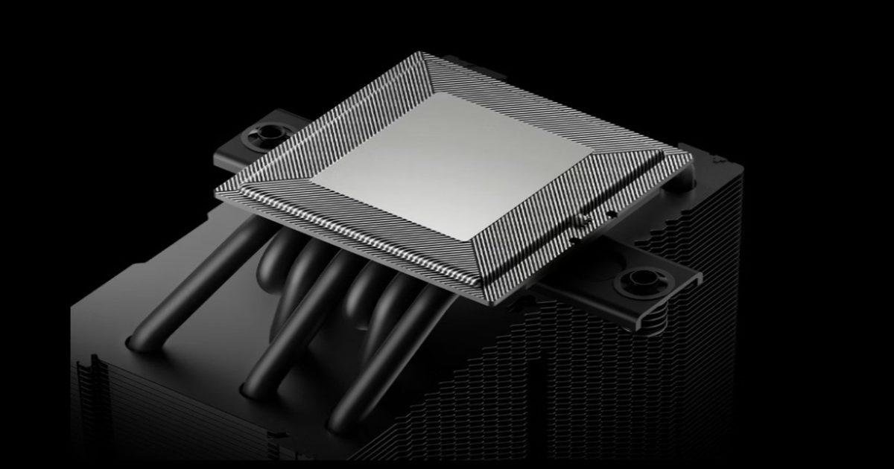

Новая статья: Обзор и тест процессорного кулера DeepCool AK700 VC: просто добавь вентилятор
Максимальный заявленный уровень тепловыделения нового однобашенного кулера DeepCool — 300 ватт.
Это впечатляющее значение не только для двухбашенных кулеров, но и для большинства СЖО необслуживаемого типа.
Однако у AK700 VC есть козырь в рукаве – испарительная камера второго поколения.
Вопрос лишь в том, сможет ли новый кулер этот козырь правильно разыграть?